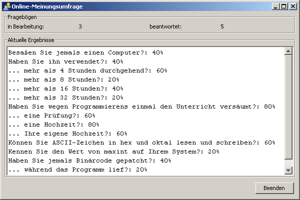

In diesem Projekt geht es um einen Server, an dem man online eine Meinungsumfrage durchführen kann. Als Clients verwendet man telnet-Clients. Mehrere Benutzer können mit ihren telnet-Clients gleichzeitig an der Meinungsumfrage teilnehmen.
Sobald sich ein Client mit dem Server verbindet, erscheint dort eine Begrüßung und danach eine Reihe von Fragen. Die Fragen sind so
formuliert, dass man sie mit "Ja" oder "Nein" beantworten muss. Als Antwort genügt eines der Zeichen 'j' oder
'n'. Ist die Antwort unverständlich, so soll ein Hinweis ausgegeben und die Frage wiederholt werden.
Der Ablauf auf der Clientseite sieht z.B. so aus:
Nach der letzten Antwort bedankt sich der Server und trennt dann die Verbindung.
Der Server besitzt eine grafische Benutzeroberfläche, die folgendermaßen aussieht:

In einer Liste sieht man, wieviel Prozent der Teilnehmer jede Frage mit "Ja" beantwortet haben. Dabei werden nur vollständig ausgefüllte Fragebögen berücksichtigt. Außerdem sieht man, wieviele Teilnehmer derzeit online einen Fragebogen ausfüllen ("in Bearbeitung") und wieviele Fragebögen seit dem Starten des Servers vollständig ausgefüllt wurden ("beantwortet").
Diese Angaben werden in Echtzeit aktualisiert (d.h. sobald sich ein Client verbindet oder eine Clientverbindung mit (un-)vollständig ausgefülltem Fragebogen endet).
Mit dem Beenden-Button, durch Schließen des Fensters oder mit Alt-F4
beendet man den Server.
Die Anwendung verwendet folgende Klassen:
Fragebogen: enthält die Fragen, die man beantworten soll und speichert die Antworten. Alle Fragebögen
enthalten dieselben Fragen. Fragebogen-Objekte merken sich, welche Fragen beantwortet wurden, sodass man
feststellen kann, ob der Fragebogen vollständig ausgefüllt wurde.
Diese Klasse ist bereits vollständig implementiert und darf nicht verändert werden.
Server: agiert als Benutzerinterface und als Manager und nimmt ankommende Verbindungen entgegen. Übergibt jede Verbindung an
ein neues Interview-Objekt zur weiteren Behandlung. Wird von jedem Interview-Objekt
zu Beginn des Interviews benachrichtigt und erhält am Ende den ausgefüllten Fragebogen zurück.
Interview: ein Thread, der einen neuen Fragebogen von einem Client ausfüllen läßt und der den ausgefüllten
Fragebogen an das Server-Objekt übergibt.
.java-Dateien, die von Dir zu bearbeiten sind, sind im Kommentar durch das Wort TODO gekennzeichnet.public Methoden der Fragebogen-Klasse kannst Du
ersehen, wie man diese Klasse einsetzt.Fragebogens liefert die Methode getFragen(); man kann
Fragebogen-Objekte aber auch in "for each"-Schleifen verwenden, sie liefern dann der Reihe nach die
Fragen, z.B. so:
Fragebogen fragebogen = new Fragebogen();
for (String frage : fragebogen) {
System.out.println(frage);
}flush()-Methode benötigt, damit eine Streamausgabe auch auf
dem telnet-Client erscheint.Interview-Objekte entstehen
können und wie man das verhindert.Interview dürfen andere Interviews oder den
Server nicht beeinträchtigen.umfrage.jar.Punkte | Note |
0 bis 12 | 5 |
>12 bis 15 | 4 |
>15 bis 18 | 3 |
>18 bis 21 | 2 |
>21 bis 24 | 1 |